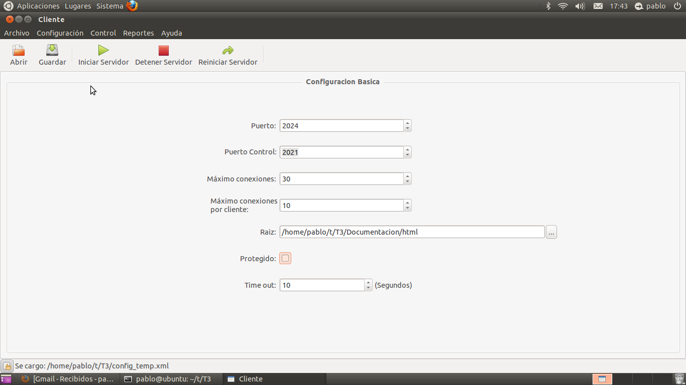
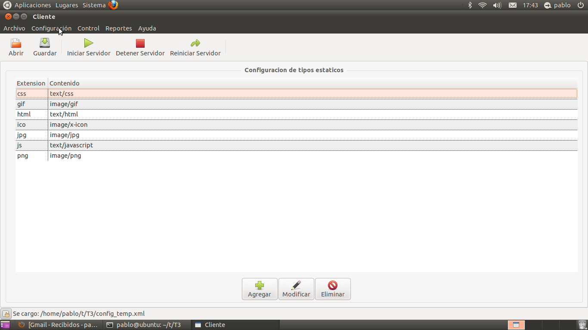
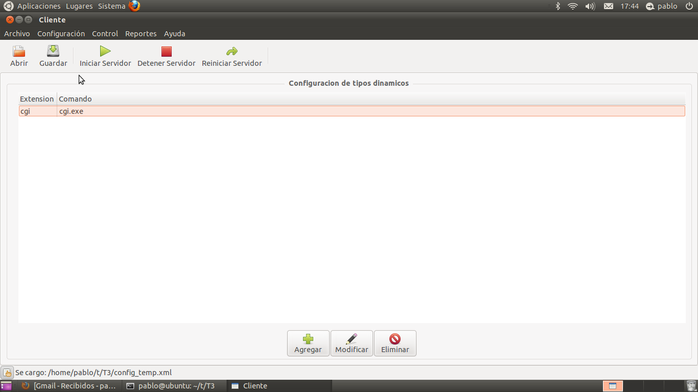
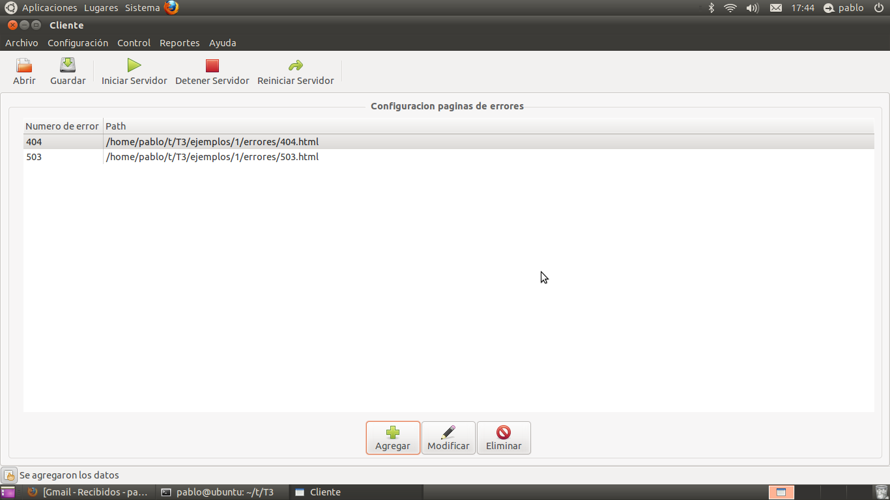
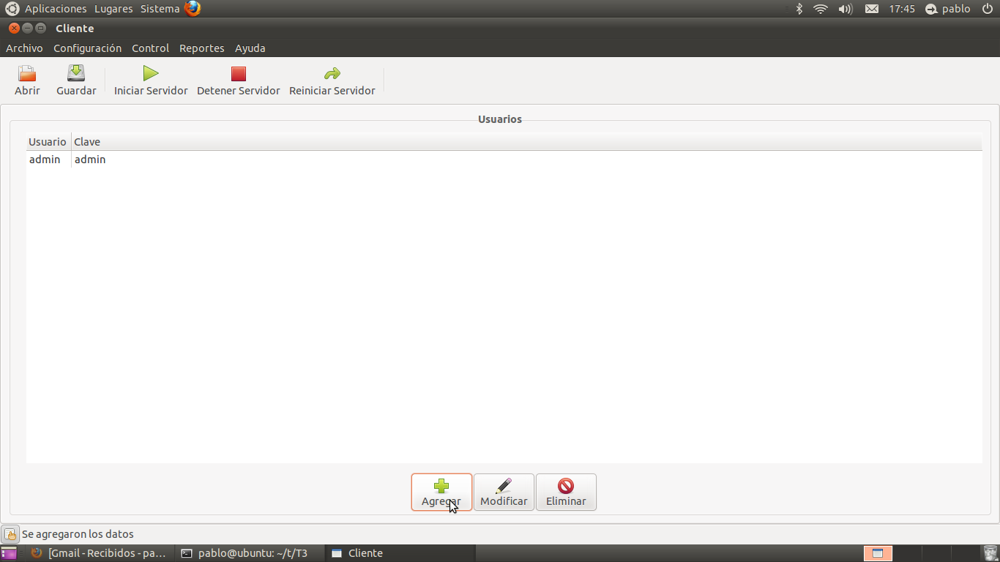
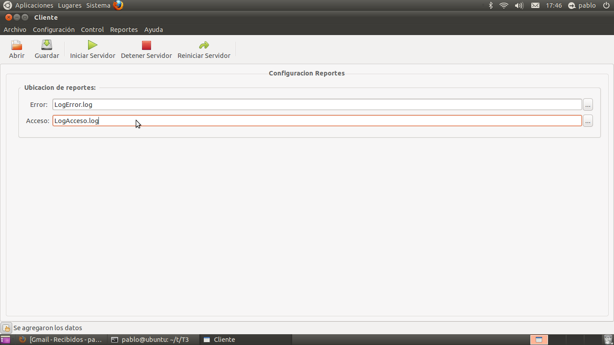

Configurando
Para poder hostear nuestra propia página web se deben realizar una serie de configuraciones.
La interfaz gráfica de nuestro software ofrece la posibilidad de realizar estas configuraciones de una forma fácil e intuitiva.
Las distintas configuraciones estan separadas en distintas categorias. A continuación se explica cada una de ellas.
2.1. Realizando configuraciones básicas
- Puerto: este campo sirve para indicar a que puerto responderá nuestro servidor HTTP una vez iniciado.
- Puerto Control: este campo es utilizado para indicarle al servidor en que puerto estará escuchando la petición de fin de ejecución.
- Máximo conexiones: este campo indica la cantidad máxima de conexiones que podrá manejar nuestro servidor en simultaneo. Se debe tener en cuenta que este número no debe ser demasiado alto ya que no alcanzarían los recursos de la máquina.
- Máximo conexiones por cliente: este campo indica la cantidad máxima de conexiones que podrá tener un mismo cliente simultaneamente. No tendría sentido que este número sea mayor que el máximo de conexiones pues nunca se podrían aprovechar.
- Raíz: este campo le indica al servidor donde se encuentra la raíz del sitio. Se recomienda que todos los sitios hosteados en el servidor tengan dentro de la carpeta raiz un archivo llamado "index.html". Ese será el que el servidor tome por defecto. En caso de no encontralo devuelve error 404.
Para seleccionar la raíz del sitio se debe utilizar el buscador de carpetas que se encuentra a la derecha del campo de texto.
- Protegido: este campo le indica al servidor si estará protegido por atenticación BASIC o no. Para un servidor autenticado marque la casilla.
- Time Out : este campo le indica al servidor cuanto deberá esperar para determinar que una conexión esta caída. Una vez pasado ese tiempo indicado en segundos, el servidor detendrá esas conexiones e indicará esa acción dentro del LOG de errores del mismo.
A continuación se muestra una captura de pantalla con una configuración básica:

2.2. Configurando los tipos de datos estáticos
Una vez finalizada la configuración básica y que sabemos que sitio es el que tenemos que hostear , estamos en condiciones de determinar que tipos de datos estáticos tenemos que manejar.
Para realizarlo, primero debemos movernos a la vista de tipos estáticos. Existen dos maneras diferentes de ir hacia esta ventana. La primera es utilizando el menú, seleccionando Tipos Estáticos dentro de la solapa Configuración. La segunda es utilizando la barra de tareas que se encuentra a la izquierda de la pantalla( por defecto esta barra se encuentra desactivada. Para activarla basta con hacer click en el botón ubicado en la esquina inferior izquierda) .

Una vez que llegamos a la vista de tipos estáticos debemos utilizar los botones Agregar, Modificar o Eliminar para poder seleccionar todos los tipos estáticos que utilicemos en el sitio.
2.3. Configurando los tipos de datos dinámicos
Es posible que nuestro sitio también necesite generar contenido dinamicamente. Para ello, tenemos la sección de tipos dinámicos. Al igual que con los tipos estáticos, es posible acceder por el menú o la barra lateral y posee los botones Agregar, Modificar y Eliminar en la parte inferior de la pantalla.
Según el sitio es posible que no se necesite ninguno o que se necesiten varios.
Es condición necesaria y muy importante que todos los programas que se creen para ejecutar peticiones dinamicamente se encuentren dentro de la carpeta cgi-bin que se encuentra en la misma carpeta que el ejecutable del configurador.

2.4. Configurando las páginas de error
Para que los usuarios de nuestro sitio se enteren si ocurrió algún problema es necesaria la creación de páginas de errores. Para configuralas se utiliza la vista de Errores que posee las opciones necesarias para modificar, agregar o remover.

2.5. Configurando los usuarios permitidos
Si nuestro servidor está protegido y queremos que sea navegable, entonces debemos agregar usuarios que tendrán permitido la navegación por el mismo. No tendría sentido tener un servidor protegido sin usuarios ya que nadie lo podría visitar.
Al igual que con las configuraciones anteriores, es posible acceder desde la barra lateral o el menú y tiene las funciones necesarias para agregar, remover o modificar los datos de los usuarios.

2.6. Configurando los archivos de LOG.
Los LOGs son utilizados por el administrador para saber como fue la actividad dentro del mismo. Es necesario su configuración. Es posible acceder a la ventana de configuración de logs desde el menú en la solapa de Reportes o desde la barra lateral.
Tener en cuenta que si el archivo elegido ya existía entonces seguirá logueando en el mismo.

Una vez que finalizamos la configuración del servidor entonces ya estamos en condiciones de iniciarlo por primera vez.